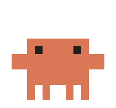
no costume
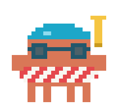
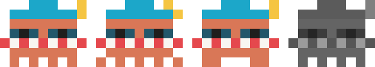
swim cap, goggles and a ring; the snorkel sways
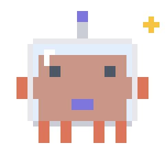
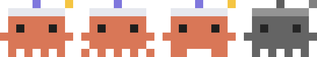
glass dome; floats, antenna and star blink
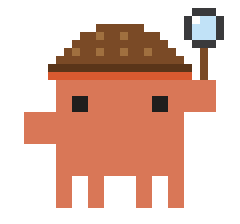
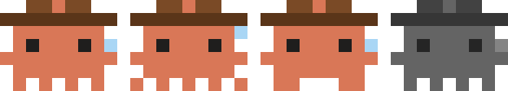
deerstalker; the magnifier sweeps and glints
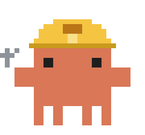
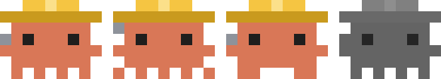
hard hat; the wrench turns a bolt
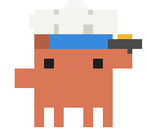
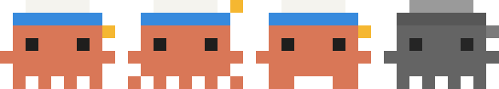
toque; tosses the omelette
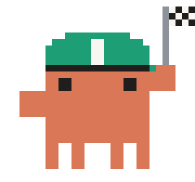
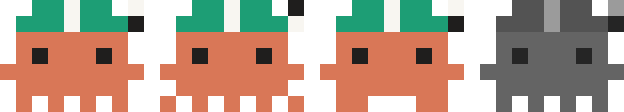
helmet; runs at double pace, flag flutters
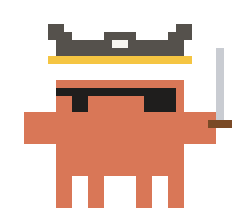
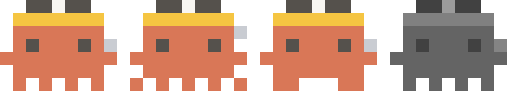
tricorn; the cutlass fences